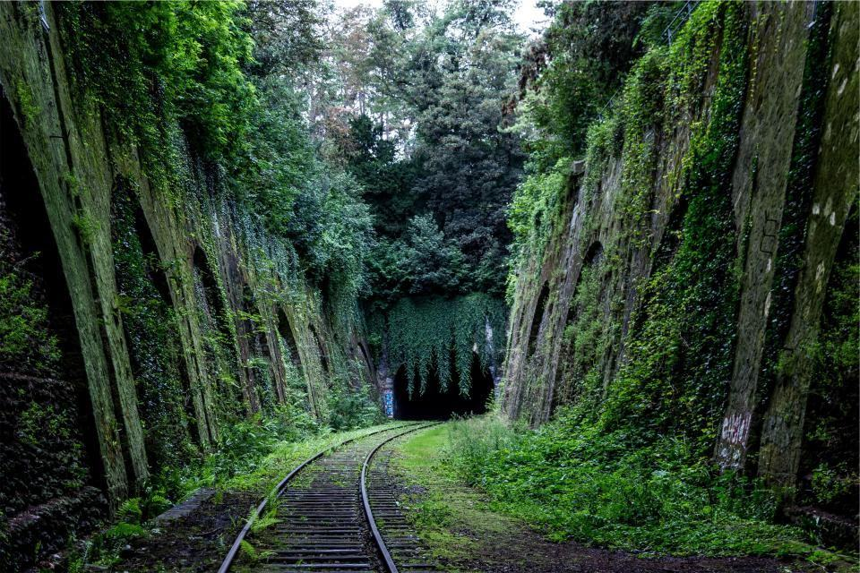

Vår verksamhet
Lodmark omsätter i dag 19,8 miljarder kronor och har 14 200 medarbetare i Sverige, Norge, Danmark, Finland, Storbritannien och Kanada. Sedan 1986 kan alla anställda bli delägare, och genom Lodmark Partners äger medarbetarna 31 procent av rösterna i det börsnoterade bolaget.
Vilken fråga ska utredas?

Vatten och miljö
Koncernens ursprung och fortfarande största område. Vi projekterar reningsverk, ledningsnät och skyfallsskydd åt kommuner och vattenbolag i hela Norden och i Storbritannien.
4 100 vatten- och miljöspecialister, varav 380 hydrologer.

Transport
Vägar, järnvägar, spårvägar och cykelnät från tidiga åtgärdsvalsstudier till bygghandlingar. Vi arbetar ofta som ensam totalkonsult åt statliga och regionala beställare.
Lodmark projekterar just nu fem spårvägar i Norden.

Byggnader
Arkitekter, konstruktörer och installationsprojektörer för skolor, sjukhus och bostäder. Vi samordnar alla discipliner i en gemensam BIM-modell från första skissen.
Över 300 skolor projekterade sedan 2010.

Planering och klimat
Översiktsplaner, detaljplaner, klimatanalyser och klimatanpassning. Här börjar många av koncernens största uppdrag, långt innan beslut om att bygga har fattats.
Vi har tagit fram klimatanpassningsplaner för 74 kommuner.
Från fråga till färdig handling
- 1

Förstudie och åtgärdsval
Innan något ritas prövar vi om problemet går att lösa billigare – med en ny busslinje i stället för en väg, eller en park i stället för en ledning.
- 2

Utredning och modellering
Trafik, vatten, buller och klimat modelleras i en digital tvilling av området som alla parter kan se.
- 3

Plan och projektering
Detaljplan, järnvägsplan eller bygghandlingar tas fram i samordnade BIM-modeller för alla discipliner.
- 4

Byggskede och uppföljning
Vi följer projekten ut på bygget som byggledare och kontrollanter, och utvärderar resultatet efter två år i drift.